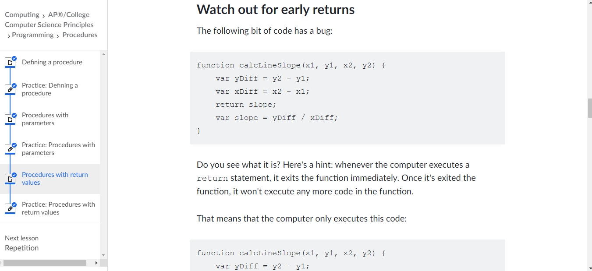
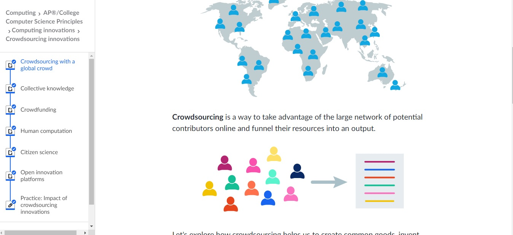
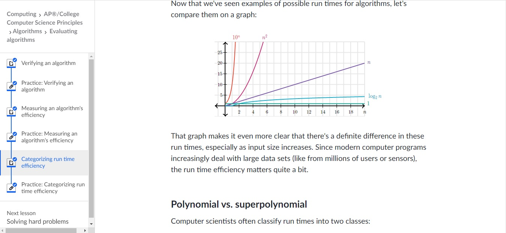
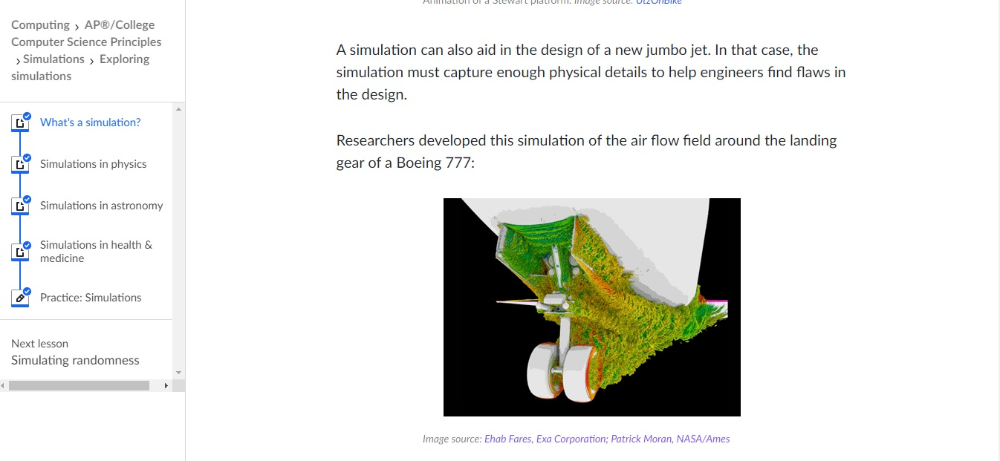

Computer Programming
The programming section in Khan Academy was one of the first things I completed in the course. After having not done programming in quite a while, this section allowed me to get back up to speed on all of the concepts I needed to to be comfortable with in continuing in the course and even taught me a few new things. I gave me a very good understanding - one I did not have before - of the theoretical framework that underpinned most if not all of programming, and explained the value of certain concepts, such as arrays and loops, and why programmers always use them. While this section dealt mostly with basic principles, it will serve as a stepping stone for my future, more advanced studies in understanding other programming tools and conventions. To see the full course, click here.
Computing Innovations and The Internet
I found the computing innovations section particular interesting and informative. It taught me about so many online platforms and platform types I did not even knew existed, much less understood the benefits of. THings such as croudsourcing platforms and methods were especially interesting to me as it demonstrated ways in which researchers could use technology and the internet to further and facilitate their research. As I conduct my own research in the future, I will try to keep these methods in mind to try to maximize the benefits and eficiency of my work. The internet, section too, taught me a lot of things about how the internet functioned, which could be useful if I decide to do future work in development of internet-connected systems, to make them best-suited to the ways of the internet. Links to Computing Innovations and The Internet.
Digital Information and Algorithms
Although the digital information unit was quite basic, it was a nice refresher on the basics of computing as I started the course and helped me understand the advantages and disadvantages of lossy and lossless compression algorithms (To be honest, I did not even know what those two things even were before I started the course). Now I know when and why to use a PNG over a JPEG for example, in my future websites and programs. And as I continue to develop my skills, who knows? Maybe I will soon be developing a compression algorithm. Speaking of algorithms, the algorithms usit was an effective way of explaining to me the logic behind basic algorithms that we find in everyday life, something I had struggled to understand previously. As I possibly use algorithms and computing in my future research, in developing heuristics for solving equations or integrals, for example, I will try to keep in mind what I learnt about run time-efficiency, and how I can make sure my algorithms do not run in unreasonable time. Links to Digital Information and Algorithms.
Data Analysis, Simulations, and Online Data Security
These sections were incredibly helpful in illuminating a variety of issues. The simulation section for example, surprised me in how many ways we could use simulations in the natural sciences and social sciences, to solve some of the world's most pressing challenges, such as finding proteins for drugs. The data analysis section, also showed how big data has transformed our world, and also taught me about a variety of social issues that could arise from this use of data that I did not previously know about. The online security unit was particularly meaningful to me, as it not only explained how encription works, which is incredibly interesting in its own right, but also taught me a lot of things about security that I can now apply in my daily life. As I continue to develop my computer science skills and as I go on to university, I will keep in mind both the applications and dangers of data and simulations, to use as a means to help understand physical or other scientific concepts I learn, and try to use these simulations and data to provide further insights for myself and others into how these concepts work. Links to Data Analysis, Simulations and Online Data Security.